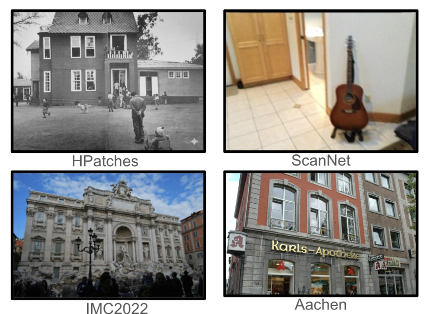
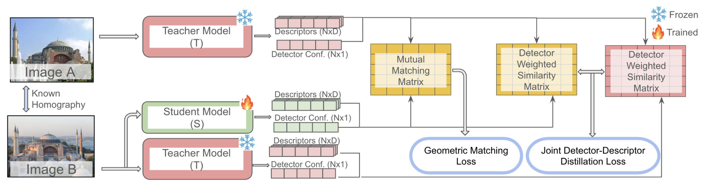
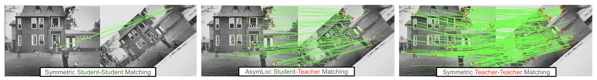
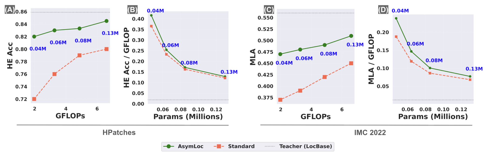
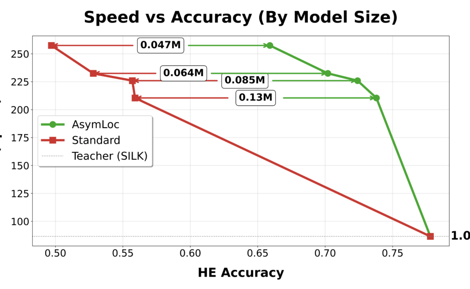
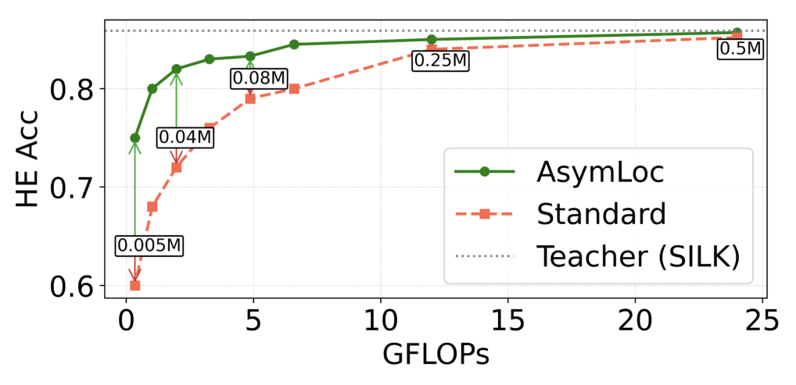

AsymLoc: asymmetric feature matching for efficient visual localization
The short version. Visual localization has a built-in asymmetry. The map is built offline, so its database images can be processed once by a large feature model. The query image arrives online on a small device, such as smart glasses, where latency, heat, and battery matter. AsymLoc turns that asymmetry into the model design: a large frozen Teacher extracts map features offline, a tiny Student extracts query features online, and the two sides are matched with parameter-free mutual nearest neighbor matching. The hard part is compatibility. Features from two different networks do not naturally live in the same matching space. AsymLoc trains the Student to align with the Teacher in the joint detector-descriptor space, where detector confidence changes how much descriptor similarity should be trusted.

1. Motivation: the map is offline, the query is not
A standard visual localization pipeline estimates the 6-DoF camera pose of a query image against a pre-mapped database. It usually retrieves a shortlist of candidate database images, then matches local features between the query and the shortlisted map images. The second step is expensive because it must happen after the query arrives.
The map side has a different budget. Database images can be processed once, stored, and reused. There is no deployment reason to force the map image and the query image through the same small model. If the map can afford a strong Teacher, the online side only needs a Student that speaks the Teacher's feature language.
The naive way to bridge two feature languages is to add a learned matcher such as SuperGlue or LightGlue. That defeats the edge-device goal. LightGlue alone is roughly 13M parameters and about 93 ms, while the SuperPoint extractor is roughly 1.3M parameters and under 10 ms. AsymLoc therefore sets a stricter target: train the Student so that Teacher-Student features can be matched by simple mutual nearest neighbor, with no learned matcher at inference.
Q: why is matching harder than retrieval here?
A: Retrieval uses one global descriptor per image. Matching uses many local keypoints, each with a detector confidence and a descriptor. The Student must not only place descriptors near the Teacher's descriptors. It must also learn where the Teacher would trust a keypoint.
Takeaway: Compatibility for localization is a joint problem: where to look and how to compare must be aligned together.
2. Contribution: asymmetric localization without a heavy matcher
The paper makes three concrete claims. First, it formulates asymmetric visual localization: the database side is processed offline by a large Teacher, and the online query side is processed by a lightweight Student. The authors position this as the first application of the asymmetric setting, previously studied for image retrieval, to the image-matching step of localization.
Second, it proposes AsymLoc, a training framework that aligns Teacher and Student in the joint detector-descriptor space. The key phrase is joint. Detector confidence is not treated as a side output. It modulates descriptor similarity, so the model learns a distribution over matchability rather than only a distribution over raw descriptor vectors.
Third, it evaluates the idea across HPatches, ScanNet, IMC2022, and Aachen Day-Night, under the HLoc pipeline where relevant. The paper tests SiLK and SuperPoint as teachers, four Student sizes, symmetric baselines, naive distillation, and four asymmetric distillation baselines adapted from retrieval: AML, RKD, CSD, and D3Still.
The headline is not that AsymLoc beats large dense matchers. LoFTR and SuperPoint+LightGlue remain stronger on several absolute accuracy metrics. The point is the efficiency-accuracy trade-off: with the same online model size and GFLOPs as a small symmetric Student, the asymmetric Student can use a stronger offline map representation.
3. Datasets and metrics: what each number means
The training data is synthetic. Following the SiLK setup, the authors sample COCO images and apply random homographies to generate paired views. A homography is a planar geometric transform between two views. Because the transform is known, the ground-truth correspondence set $M$ is known without manual labeling.
The evaluation spans four benchmarks. HPatches measures homography estimation accuracy, reported as HE@epsilon=1 and HE@epsilon=3; higher means more pairs have accurate homographies under the pixel-error threshold. ScanNet measures relative pose estimation in indoor scenes, reported as pose AUC@10 degrees and AUC@20 degrees; higher area under the accuracy curve means better pose recovery. IMC2022 reports mean localization accuracy, or MLA, over official position and orientation thresholds; higher is better. Aachen Day-Night reports the percentage of queries localized within two error thresholds, (0.5m,5 degrees) and (5m,10 degrees), separately for day and night; higher is better.
For IMC2022, ScanNet, and Aachen, the database is processed with the Teacher and the query with the Student. For HPatches, where the input is a pair of images rather than a map-query split, the Teacher and Student sides are assigned randomly — so HPatches still measures the same Teacher-Student compatibility, just without a fixed map/query role. The HLoc pipeline supplies the standard coarse-to-fine localization wrapper for the localization benchmarks.
{kind=link}

4. Pipeline: two frozen Teacher branches, one trainable Student branch
Training starts from an image pair $(a,b)$ with a known homography. The Teacher processes image $a$. Image $b$ is processed by both the frozen Teacher and the trainable Student. Each network emits $N$ keypoints, each with detector confidence $w$ and descriptor $d$.
{kind=link}

Deployment is simpler than training. The database images are processed offline once by the Teacher, and their keypoints, confidences, and descriptors are stored. A query image is processed online by the Student. Matching is then mutual nearest neighbor between the Student descriptors and the stored Teacher descriptors, using detector-aware compatibility learned during training. No Teacher runs on the device, and no learned matcher is added.
5. Method: align matchability, not raw vectors
The method is easier to read if we keep one question in view: what quantity does deployment actually use? It uses the row and column structure of a similarity matrix. A match is accepted when two keypoints are nearest neighbors of each other. AsymLoc trains the Student at that same abstraction level.
5.1 The soft mutual match
Start with descriptor similarity. For image $a$ processed by the Teacher and image $b$ processed by the Student, the pairwise similarity matrix is:
Here $d^T_i(a)$ is the $i$-th Teacher descriptor on image $a$, $d^S_j(b)$ is the $j$-th Student descriptor on image $b$, $\langle\cdot,\cdot\rangle$ is the dot product, and $\tau$ is a temperature scalar. Smaller $\tau$ makes the similarity distribution sharper.
The soft version of mutual nearest neighbor then multiplies four signals: Teacher detector confidence, Student detector confidence, row-wise softmax, and column-wise softmax.
Here $w_i(a)$ is the Teacher detector confidence at keypoint $i$, $w_j(b)$ is the Student detector confidence at keypoint $j$, $\sigma_r$ denotes row-wise softmax, and $\sigma_c$ denotes column-wise softmax of $S$. The row softmax asks whether $j$ is the best choice for $i$. The column softmax asks whether $i$ is the best choice for $j$. Multiplying them makes a differentiable proxy for mutual nearest neighbor.
5.2 The geometric matching loss
The known homography gives ground-truth correspondences $M$. AsymLoc maximizes the soft match probability at those correspondences in both Teacher-Student directions.
The sums run over ground-truth correspondences $M$ from the known homography. In the paper's implementation, the loss is restricted to Teacher keypoints whose detector confidence satisfies $w^T_i \gt \tau_d$, where $\tau_d$ is the confidence threshold. $P^{TS}$ is the soft matching matrix when image $a$ is Teacher and image $b$ is Student. $P^{ST}$ is the symmetric construction with the roles swapped.
This loss gives the Student a geometric skeleton. It tells the model which keypoints should match. But by itself it does not teach the whole similarity landscape, and the ablation later shows that using it alone is harmful.
5.3 Joint detector-descriptor distillation
The distillation loss transfers the Teacher's full matchability pattern. Before softmax, AsymLoc weights descriptor similarity by detector confidence:
Here $S_{ij}$ is the raw descriptor similarity for a keypoint pair, $w_i$ and $w_j$ are the detector confidences on the two sides, and $\tau$ is the detector-confidence temperature used for weighting. This construction is used to form both Student-Teacher and Teacher-Teacher similarity matrices, written $\bar{S}^{ST}$ and $\bar{S}^{TT}$.
The Teacher-Teacher matrix is the reference distribution. It says what the matching landscape would look like if the powerful Teacher processed both sides. The Student-Teacher matrix is what deployment will use. The loss makes those two distributions agree along rows and columns.
$L_{\text{KD}}$ is the knowledge-distillation loss. KL divergence measures how much one probability distribution differs from a reference distribution. The first term aligns row-wise matchability distributions, and the second aligns column-wise matchability distributions. The same construction is then applied with the Student and Teacher roles swapped, so both matching directions are trained.
The reason this is better than descriptor regression is direct. Mutual nearest neighbor does not care about the absolute coordinates of a descriptor vector. It cares about the relative order of similarities in a row and in a column. The KL loss targets that order structure after detector confidence has modulated the similarities.
5.4 The total objective
$L_{\text{match}}$ contributes geometry from known correspondences. $L_{\text{KD}}$ contributes the Teacher's detector-descriptor matchability distribution. $\lambda_{\text{KD}}$ balances the two terms and is set to 2 in the paper.
Q: why not just make the Student descriptors imitate the Teacher descriptors?
A: Matching is not a vector-copying problem. It is a ranking problem over keypoint pairs. A Student can use a different internal representation and still work if its row and column similarity distributions match the Teacher's. That is exactly what the KL loss trains.
Takeaway: AsymLoc distills the thing the matcher will consume, not an intermediate vector format.
6. Training: frozen Teacher, synthetic homographies, tiny CNN students
| Item | Setting |
|---|---|
| Teacher | Frozen pretrained SiLK or SuperPoint. |
| Student | CNN backbone with detector and descriptor heads. |
| Student sizes | 0.13M, 0.08M, 0.06M, and 0.04M parameters. |
| Training pairs | Synthetic COCO homography pairs with known correspondences. |
| Optimizer | Adam for 50 epochs. |
| Learning rate | $1\times10^{-3}$. |
| Detector threshold | $\tau_d = 0.65$. |
| Distillation weight | $\lambda_{\text{KD}} = 2$. |
| Augmentation | Random brightness, rotation, scaling, Gaussian noise, and the broader augmentation suite described in the appendix. |
| Hardware and training time | Not stated in the paper. |
For symmetric baselines, both images are encoded by the same small network. For asymmetric baselines, the online model remains small and the offline side uses the Teacher. The important accounting rule is that only the Student counts as online cost.
7. Experiments: near-Teacher accuracy at Student cost
The full table below preserves the paper's main comparison. The columns are the metrics defined in Section 3. "#params online" is the model that runs on the query device. "#params offline" is the model used to precompute map features. GFLOPs is inference cost for one image where reported.
| Method | Asym? | #params online | #params offline | GFLOPs | HE@1 | HE@3 | AUC@10 | AUC@20 | MLA | Aachen Day (0.5m,5 degrees) | Aachen Day (5m,10 degrees) | Aachen Night (0.5m,5 degrees) | Aachen Night (5m,10 degrees) |
|---|---|---|---|---|---|---|---|---|---|---|---|---|---|
| SiLK teacher block: teacher = SiLK, 1M parameters, 47.3 GFLOPs | |||||||||||||
| Standard (symm) | ✗ | 0.13M | 0.13M | 6.6 | 0.56 | 0.80 | 29.7 | 45.2 | 0.45 | 80.2 | 85.2 | 69.7 | 80.0 |
| Naive-Distill (symm) | ✗ | 0.13M | 0.13M | 6.6 | 0.56 | 0.79 | 29.5 | 44.2 | 0.44 | 80.0 | 85.1 | 69.9 | 81.0 |
| Naive-Distill (asym) | ✓ | 0.13M | 1M | 6.6 | 0.57 | 0.80 | 30.5 | 45.1 | 0.45 | 80.0 | 85.1 | 70.1 | 81.4 |
| AML | ✓ | 0.13M | 1M | 6.6 | 0.57 | 0.81 | 30.7 | 46.2 | 0.46 | 80.6 | 85.5 | 70.1 | 81.4 |
| RKD | ✓ | 0.13M | 1M | 6.6 | 0.56 | 0.81 | 31.1 | 47.4 | 0.46 | 81.0 | 85.3 | 70.0 | 81.2 |
| CSD | ✓ | 0.13M | 1M | 6.6 | 0.57 | 0.83 | 32.1 | 47.5 | 0.48 | 81.2 | 85.6 | 71.0 | 82.4 |
| D3Still | ✓ | 0.13M | 1M | 6.6 | 0.57 | 0.82 | 32.9 | 49.0 | 0.47 | 81.5 | 86.0 | 71.0 | 82.4 |
| AsymLoc (Ours) 0.13M | ✓ | 0.13M | 1M | 6.6 | 0.60 | 0.84 | 32.9 | 48.9 | 0.51 | 83.3 | 87.8 | 71.2 | 84.4 |
| AsymLoc (Ours) 0.08M | ✓ | 0.08M | 1M | 4.87 | 0.59 | 0.83 | 31.5 | 48.5 | 0.50 | 82.1 | 86.0 | 71.0 | 83.2 |
| AsymLoc (Ours) 0.06M | ✓ | 0.06M | 1M | 3.27 | 0.58 | 0.83 | 31.0 | 47.4 | 0.48 | 80.6 | 85.1 | 69.2 | 82.0 |
| AsymLoc (Ours) 0.04M | ✓ | 0.04M | 1M | 1.97 | 0.56 | 0.82 | 30.1 | 45.8 | 0.47 | 80.1 | 84.8 | 69.0 | 81.2 |
| Standard (symm) 0.08M | ✗ | 0.08M | 0.08M | 4.87 | 0.55 | 0.79 | 27.6 | 44.6 | 0.43 | 79.1 | 83.2 | 67.9 | 78.8 |
| Standard (symm) 0.06M | ✗ | 0.06M | 0.06M | 3.27 | 0.52 | 0.76 | 24.2 | 38.9 | 0.39 | 75.0 | 80.5 | 64.5 | 75.4 |
| Standard (symm) 0.04M | ✗ | 0.04M | 0.04M | 1.97 | 0.49 | 0.72 | 22.1 | 35.5 | 0.37 | 73.7 | 78.0 | 60.0 | 73.8 |
| SiLK teacher (oracle) | 1M | 1M | 47.3 | 0.62 | 0.86 | 34.1 | 50.2 | 0.56 | 87.2 | 91.5 | 74.5 | 86.8 | |
| SuperPoint teacher block: teacher = SuperPoint, 1.3M parameters, 26.1 GFLOPs | |||||||||||||
| Standard 0.08M | ✗ | 0.08M | 0.08M | — | 0.38 | 0.74 | 17.5 | 31.0 | 0.38 | 78.5 | 82.1 | 53.0 | 70.2 |
| AsymLoc 0.08M | ✓ | 0.08M | 1.3M | — | 0.41 | 0.76 | 18.3 | 33.5 | 0.39 | 80.7 | 84.5 | 56.6 | 72.1 |
| Standard 0.06M | ✗ | 0.06M | 0.06M | — | 0.33 | 0.71 | 12.3 | 26.6 | 0.35 | 73.9 | 78.2 | 51.3 | 68.1 |
| AsymLoc 0.06M | ✓ | 0.06M | 1.3M | — | 0.39 | 0.75 | 16.9 | 31.4 | 0.37 | 77.9 | 83.0 | 55.8 | 71.5 |
| SuperPoint (oracle) | 1.3M | 1.3M | 26.1 | 0.43 | 0.80 | 21.5 | 36.4 | 0.49 | 86.8 | 90.0 | 59.2 | 74.5 | |
| Reference methods | |||||||||||||
| LoFTR | 28M | 28M | 223 | 0.65 | 0.87 | 40.8 | 57.6 | 0.66 | 94.4 | 97.7 | 91.8 | 98.0 | |
| SuperPoint+LightGlue | 14M | 14M | 63.3 | 0.47 | 0.82 | 35.3 | 53.3 | 0.61 | 95.4 | 98.3 | 91.8 | 100.0 | |
Read the table by separating two questions. The first question is whether asymmetry helps at fixed online cost. Under the SiLK Teacher, the 0.13M Standard row and the 0.13M AsymLoc row both use 6.6 GFLOPs online, but AsymLoc improves HE@1 from 0.56 to 0.60, MLA from 0.45 to 0.51, and Aachen Night at (5m,10 degrees) from 80.0 to 84.4.
The second question is how close the Student gets to the Teacher. On Aachen Day at (0.5m,5 degrees), which is the percentage of day queries localized within 0.5 meters and 5 degrees, the 0.13M AsymLoc Student reaches 83.3 while the SiLK Teacher reaches 87.2. That is 95.5% of the Teacher. The 0.13M Student is about 8x smaller than the 1M SiLK Teacher and uses about 7x fewer FLOPs, 6.6 versus 47.3. At the extreme end, the 0.04M Student is about 25x smaller and uses about 24x fewer FLOPs, 1.97 versus 47.3.
With SuperPoint as Teacher, the same Aachen Day fine-threshold ratio is about 93%: the 0.08M AsymLoc Student reaches 80.7 and the 1.3M SuperPoint Teacher reaches 86.8. This is the right way to state the ratio. The result is strong, but it should not be inflated beyond the paper's numbers.
Against asymmetric baselines, the pattern is also informative. Naive-Distill is nearly flat relative to Standard. AML and RKD give modest gains. CSD is the first large jump because it distills similarity structure rather than only raw feature values. D3Still adds a ranking loss on top of CSD, which helps in image retrieval, but here it does not further help for matching. AsymLoc beats all asymmetric baselines on almost every metric. The important exception is ScanNet AUC@20 degrees, where D3Still is ahead by 0.1: 49.0 versus 48.9. The paper itself states this caveat.
{kind=link}

{kind=link}

{kind=link}

8. Ablations: the KL term carries the main load
The loss ablation separates the geometric matching loss and the joint detector-descriptor distillation loss. The result is sharper than "both losses matter." Used alone, $L_{\text{match}}$ is worse. Used alone, $L_{\text{KD}}$ gives most of the gain. Used together, they are best.
| $L_{\text{match}}$ | $L_{\text{KD}}$ | HPatches HE@1 | HPatches HE@3 | ScanNet AUC@10 | ScanNet AUC@20 |
|---|---|---|---|---|---|
| ✓ | — | 0.53 | 0.70 | 21.6 | 35.8 |
| — | ✓ | 0.57 | 0.82 | 30.0 | 46.9 |
| ✓ | ✓ | 0.59 | 0.83 | 31.5 | 48.5 |
The paper explains the weak standalone result for $L_{\text{match}}$ as a detector-supervision issue. The matching loss has no negative signal for the detector. It mostly reweights training toward keypoints where the Teacher is confident. That can regularize the full objective, but it is not a complete objective by itself.
The KL term is the main engine because it teaches the full row and column similarity structure. That matches deployment more closely than a correspondence-only loss. The combined objective still wins because the homography correspondences anchor the distribution to actual geometry.
{kind=link}

The appendix also ablates detector-confidence temperatures and the distillation weight. Lowering detector temperature from 1.0 to 0.5 improves HPatches, but pushing it further hurts. For the final objective, $\lambda_{\text{KD}}=2$ is the best reported setting; $\lambda_{\text{KD}}=0$ reduces to the harmful matching-only case, while too large a value moves back toward KD-only behavior.
9. Limitations: what the result does not say
- The Teacher sets the ceiling. AsymLoc makes the Student compatible with Teacher-derived map features. It does not make the Student exceed the Teacher. If the Teacher is weaker than a dense matcher such as LoFTR, that gap remains visible in Table 1.
- The map-side cost is moved offline, not erased. Database images must be processed and stored with the Teacher. If the map changes often, or storage is constrained, that offline cost becomes part of the system design.
- Training relies on synthetic homographies. The ground-truth correspondence set $M$ comes from known homographies on COCO pairs. This makes supervision cheap and controlled, but homographies do not cover every 3D parallax and occlusion case.
- The strongest absolute baselines are still heavier and more accurate in several columns. LoFTR and SuperPoint+LightGlue are not edge-equivalent competitors. They show the accuracy that larger online models and learned matchers can buy.
- The D3Still exception matters. AsymLoc is not a clean sweep across every cell. D3Still is better on ScanNet AUC@20 degrees by 0.1, 49.0 versus 48.9.
- Runtime hardware and full reproduction cost are only partly specified. The paper gives optimizer, epochs, learning rate, augmentations, thresholds, and appendix runtime plots. Exact end-to-end training wall time is not stated in the paper.
10. Summary: align the quantity the matcher will use
AsymLoc is a clean example of system structure becoming a learning objective. The map side is offline, so it can use a strong Teacher. The query side is online, so it needs a tiny Student. The missing piece is not a heavier matcher. It is compatibility between two local-feature models.
The paper's answer is to align the Student with the Teacher in the joint detector-descriptor space. Eq. 6 makes detector-aware mutual matching differentiable. Eq. 11 transfers the Teacher-Teacher matchability distribution to the Student-Teacher setting. Eq. 13 combines that soft distribution with geometric correspondences from homographies.
The practical result is strongest at the efficiency boundary. A 0.13M Student reaches 83.3 versus 87.2 for the SiLK Teacher on Aachen Day at (0.5m,5 degrees), or 95.5% of the Teacher, while using 6.6 rather than 47.3 GFLOPs. With SuperPoint as Teacher, the corresponding ratio is about 93%. The honest read is therefore simple: AsymLoc does not beat every large matcher, but it makes very small query models much more useful when the map can be processed offline.
11. References and figure provenance
- Mohammad Omama, Gabriele Berton, Eric Foxlin, Yelin Kim. AsymLoc: Towards Asymmetric Feature Matching for Efficient Visual Localization. arXiv:2604.09445v1 [cs.CV], 10 Apr 2026. Affiliations in the PDF: The University of Texas at Austin and Amazon.
- All equations and numeric results in this page follow the provided verified fact block and the arXiv PDF. The table rows reproduce the paper's Table 1 values as supplied in the task. The ablation table reproduces the paper's Table 2.
- Figure provenance: all seven local PNGs are reused from
assets/figures/asymloc/. The hero usesasymloc_fig1.png. The remaining figures correspond to the training pipeline, evaluation examples, matching visualization, efficiency-accuracy trade-offs, wide model-size analysis, and FPS comparison. - Referenced methods and datasets include SiLK, SuperPoint, LightGlue, SuperGlue, LoFTR, AML, RKD, CSD, D3Still, HPatches, ScanNet, IMC2022, Aachen Day-Night, HLoc, and COCO.